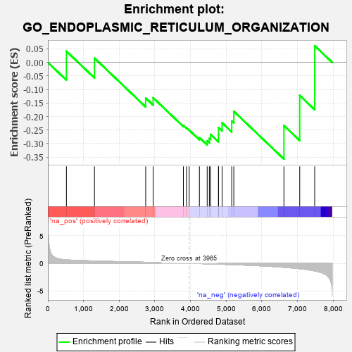

| | | Dataset | 7d |
| Phenotype | NoPhenotypeAvailable |
| Upregulated in class | na_neg |
| GeneSet | GO_ENDOPLASMIC_RETICULUM_ORGANIZATION |
| Enrichment Score (ES) | -0.35744268 |
| Normalized Enrichment Score (NES) | -0.89506286 |
| Nominal p-value | 0.6329285 |
| FDR q-value | 0.9549306 |
| FWER p-Value | 1.0 |
Table: GSEA Results Summary

Fig 1: Enrichment plot: GO_ENDOPLASMIC_RETICULUM_ORGANIZATION
Profile of the Running ES Score & Positions of GeneSet Members on the Rank Ordered List
| PROBE | GENE SYMBOL | GENE_TITLE | RANK IN GENE LIST | RANK METRIC SCORE | RUNNING ES | CORE ENRICHMENT | | 1 | GET4 | | | 520 | 0.623 | 0.0415 | No |
| 2 | UBL4A | | | 1307 | 0.427 | 0.0159 | No |
| 3 | LMAN1 | | | 2743 | 0.192 | -0.1316 | No |
| 4 | RAB10 | | | 2952 | 0.157 | -0.1308 | No |
| 5 | REEP2 | | | 3800 | 0.027 | -0.2326 | No |
| 6 | RAB18 | | | 3886 | 0.013 | -0.2411 | No |
| 7 | STX18 | | | 3962 | 0.000 | -0.2505 | No |
| 8 | GAK | | | 4249 | -0.050 | -0.2779 | No |
| 9 | LRRK2 | | | 4467 | -0.087 | -0.2902 | Yes |
| 10 | ESYT3 | | | 4528 | -0.101 | -0.2804 | Yes |
| 11 | BAG6 | | | 4563 | -0.108 | -0.2662 | Yes |
| 12 | RTN4 | | | 4783 | -0.154 | -0.2673 | Yes |
| 13 | MYO5A | | | 4787 | -0.155 | -0.2410 | Yes |
| 14 | TMCC1 | | | 4885 | -0.174 | -0.2234 | Yes |
| 15 | LMAN2 | | | 5155 | -0.238 | -0.2164 | Yes |
| 16 | ATL2 | | | 5214 | -0.249 | -0.1809 | Yes |
| 17 | ATL3 | | | 6619 | -0.723 | -0.2334 | Yes |
| 18 | ATL1 | | | 7062 | -0.972 | -0.1222 | Yes |
| 19 | VAPB | | | 7482 | -1.378 | 0.0615 | Yes |
Table: GSEA details [plain text format]
Fig 2: GO_ENDOPLASMIC_RETICULUM_ORGANIZATION: Random ES distribution
Gene set null distribution of ES for GO_ENDOPLASMIC_RETICULUM_ORGANIZATION